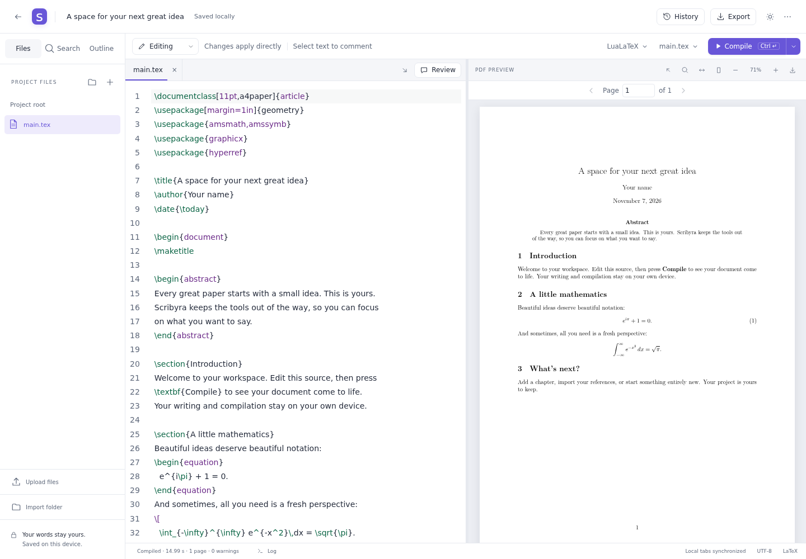

Give your project some structure
Nested folders, safe moves, recoverable deletion, and image previews. Import an existing ZIP and keep your files together.
A quieter way to write LaTeX. From the first equation to the final paper, keep your tools close and your work yours.
Runs in your browser. Compiling never uploads your document. No account needed.
Tested on Linux in Chromium, Firefox and WebKit. Not yet tested on macOS, Windows or Safari.

Chapters, figures, references, and the small revisions that make a paper yours. Bring them into one considered workspace.
Explore what works todayNested folders, safe moves, recoverable deletion, and image previews. Import an existing ZIP and keep your files together.
A source editor alongside your PDF. Browser-based LuaLaTeX and bibliography processing, with downloadable TeX packages.
Comments stay anchored to your text. Suggested changes stay out of the source until you accept them. Name a version, restore it, or keep a complete backup file.
Export a source ZIP or your finished PDF. Ordinary LaTeX files, ready for the next tool or your own backup.
Scribyra starts on your device. Your browser stores your project and runs the compiler. After your first compile, the app reopens and compiles offline, with the packages it has already fetched.
The project is licensed under AGPL-3.0. All features are intended to remain free for self-hosting. No paid feature gates.
Managed hosting is planned for people who want us to operate it. You would pay for hosted resources and service, with the same feature set.
In the official app, optional performance, error and usage telemetry goes to Grafana Cloud, a third-party service in the EU region, only for categories you choose. No document contents, names, paths, credentials, error messages or stack frames are sent. No session replay or persistent visitor IDs. Change choices in the app under More tools, then Diagnostics. The collector sees your IP address and normal browser request metadata. What Scribyra collects. Self-hosted builds have no destination or prompt unless configured.
Local saves are not an independent backup: clearing your browser’s site data removes them. Export your work regularly. Remote backup and end-to-end encryption are planned, not available. What stays on your device, and what leaves it.
What you can use today, and the order we are building toward, with a static browser app at the center.
File tabs, folders, assets, search and replace, outlines, and local LuaLaTeX compilation. The PDF reader supports text selection, search, page navigation, and source/PDF jumps after compilation.
LuaLaTeX is the supported compiler. A small baseline, checksum-verified packages fetched when a document needs them, pinned project environments, and portable package bundles for working offline.
Anchored comments, suggested changes that stay out of your source until accepted, named versions, restore, and complete backup files that you keep. Tabs in one browser profile stay up to date with each other.
An AI agent with its own browser tool can read, edit, compile, and read diagnostics in the project you have open. There is nothing of ours to install, and it runs under your control, not on our servers. You can also connect HTTP MCP providers from the browser, with reviewed tool calls.
Apart from experimental direct sessions, these are planned, not available. Testing so far has been on Linux with Chromium, Firefox and WebKit. macOS, Windows and Safari are not yet tested.
Open the latest released workspace in your browser, read the code, or follow what is taking shape.
Open appFound a problem? Email contact@scribyra.com. Nothing is sent automatically, and attaching a project is entirely up to you.